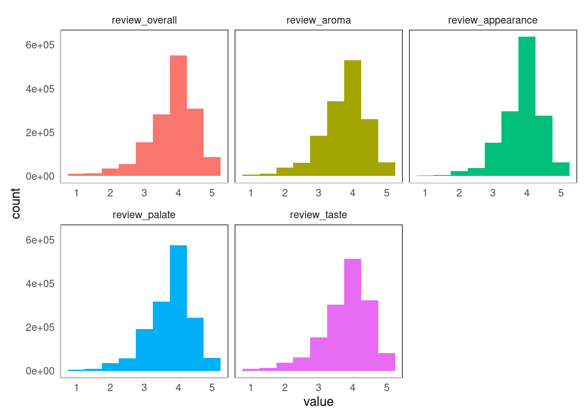
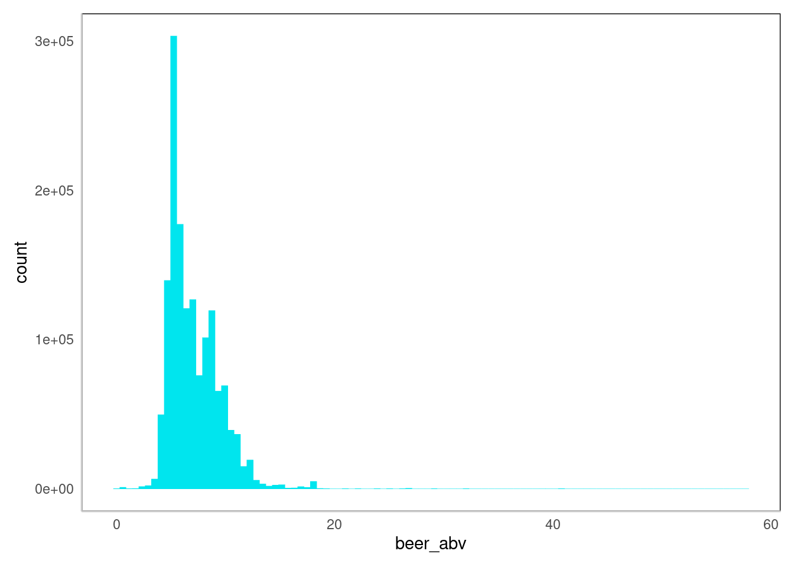
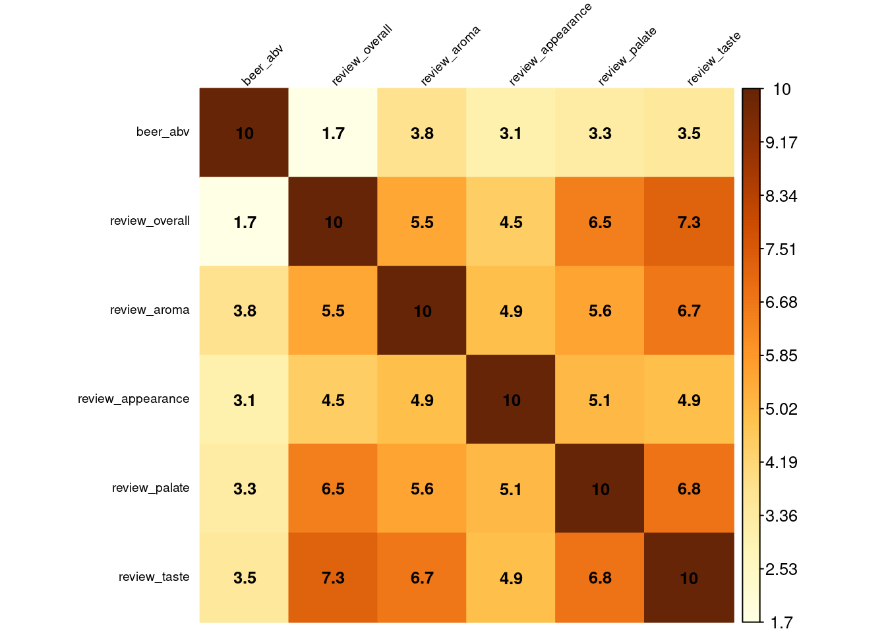
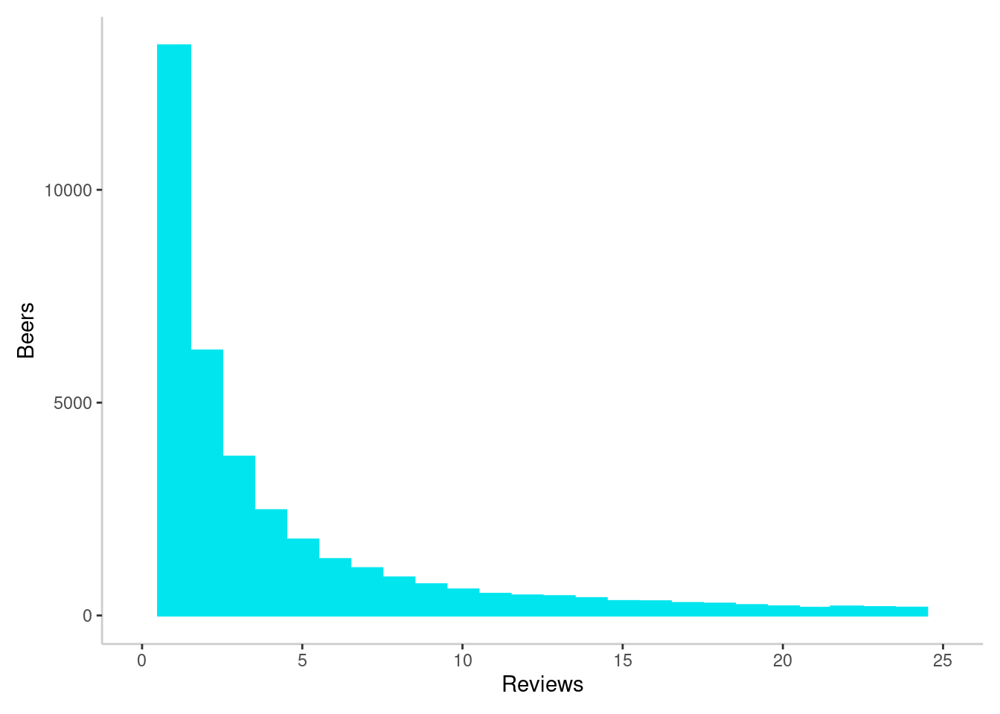
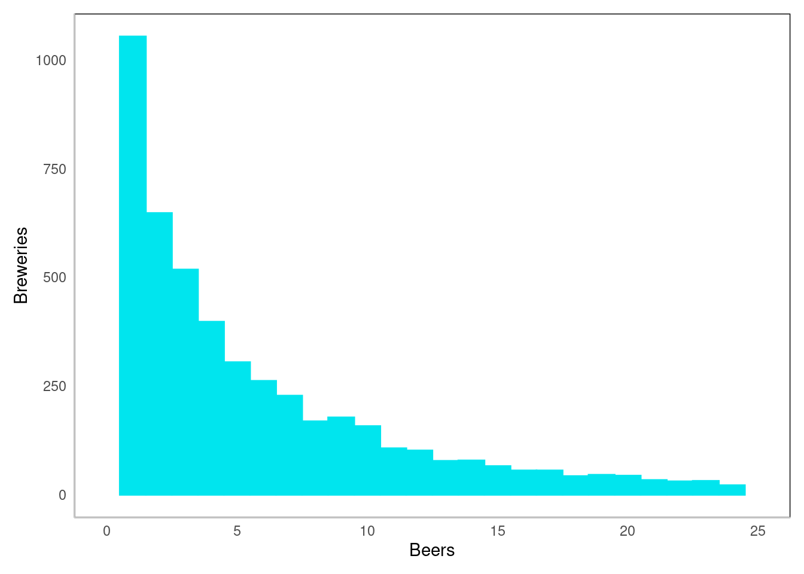
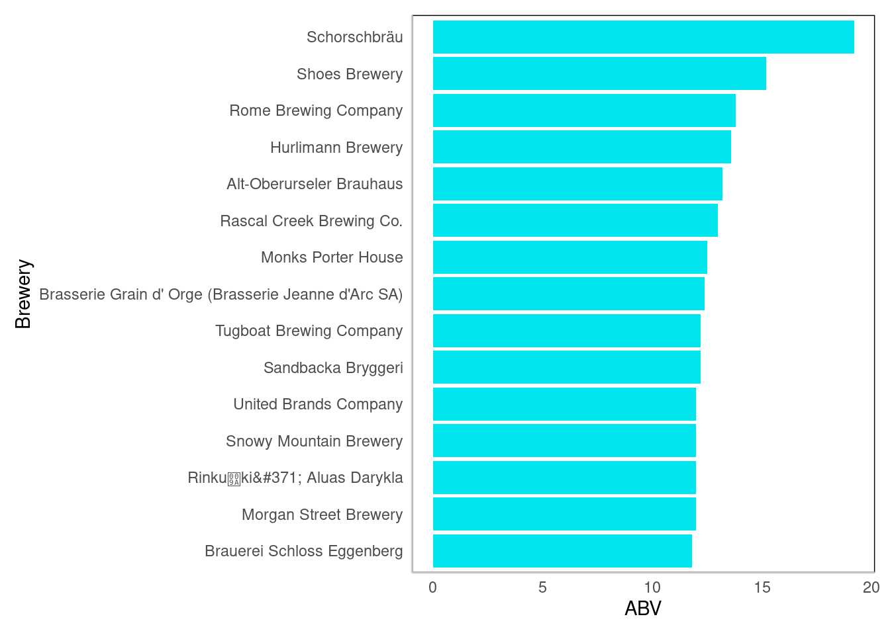
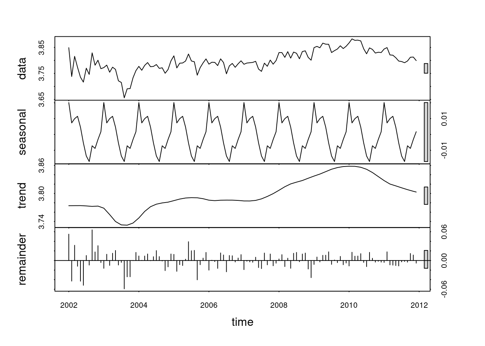
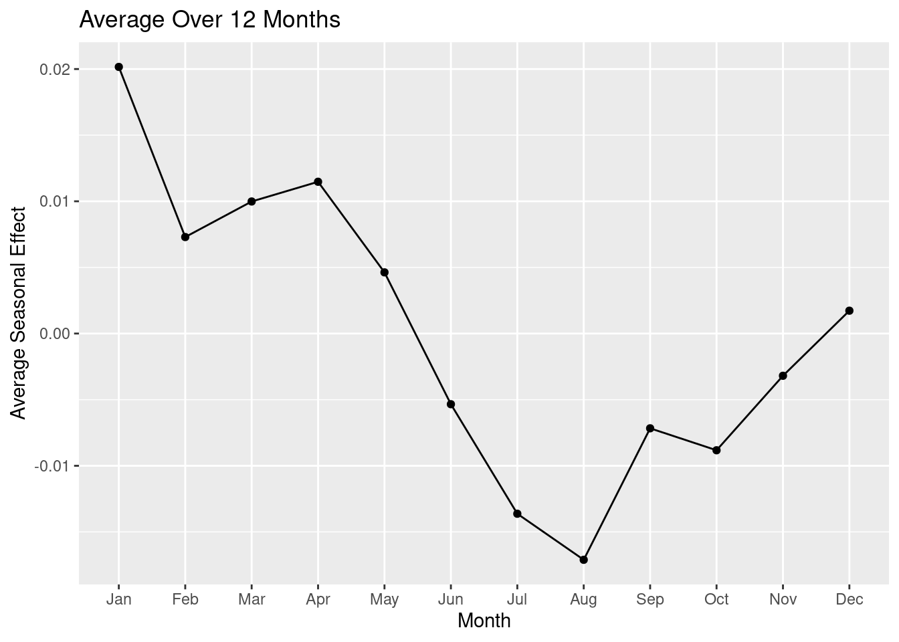

# Function to install and load packages
install_and_load_packages <- function(packages) {
for (package in packages) {
if (!require(package, character.only = TRUE)) {
install.packages(package)
require(package, character.only = TRUE)
}
}
}
install_and_load_packages(c(
"tidyverse", "reactable", "DT", "skimr", "gt", "gtExtras", "styler", "kableExtra", "forecast", "bootstrap", "zoo", "Hmisc", "ROCR", "gridExtra", "pander", "reshape2", "lazyeval", "moments", "entropy", "corrplot", "boot"
))
# install.packages("https://cran.r-project.org/src/contrib/Archive/funModeling/funModeling_1.9.4.tar.gz", repos = NULL, type = "source")
library(funModeling)
rm(install_and_load_packages)beer
Installing packages
Loading data
data <- read_csv("beer_reviews.csv")
# data %>% spec()We have an almost 200mb file with over 1kk observations. This fits working memory as it is, so no need to use DT or paralellisation.
EDA
My goal is to gradually develop an understanding of my data. I’ll approach it by doing cycles of asking questions, trying to answer them and generating a new questions along the way.
The key here is to find good questions to ask, which I know I don’t know so far. So it will be a creative process of searching and utilizing a help of a frameworks, so I can be sure to not get lost in the process.
My usual framework is to cover at least a basic questions and investigate some anomalies I’m noticing along the way.
Step 1 - Checking data health
At this stage, I have 2 general questions:
- What this data is about?
- Is the data good enough to be used?
data |>
status() |>
select(-c(contains("inf"))) |>
bind_cols(
data |> head(20) |> t() |> as_tibble() |>
unite("glimpse", 1:20, sep = ", ", remove = T, na.rm = T) |>
mutate(glimpse = str_trunc(glimpse, width = 29, ))
) |>
mutate_if(is.numeric, ~ round(., 4)) |>
remove_rownames() |>
reactable::reactable(
resizable = T,
wrap = F,
bordered = F,
defaultPageSize = 50,
height = 500
)1. Variables
Get a first glimpse of the data, to form a basic understanding of variables.
Lets group and describe variables:
So this data is about
Breweries
brewery_id - !fix to char
brewery_name - There is 5k+ different breweries, !fix NATheir beer
beer_style - And 100+ different types of beer
beer_name - With 50k+ trademarks
beer_beerid -!fix to char
beer_abv - alcohol by volume, the higher, the more alcoholic the drink, !fix NA 4%And user reviews
review_profilename - userid, Scored by 33k users, !fix NA
review_time - !fix to posix
review_overall - !fix zeros, seems like a bug from a single user, In 4 categories + weighted main score
review_aroma
review_appearance - !fix zeros
review_palate - the way it feels going down (carbonation, mouthfeel, alcohol profile and texture)
review_taste
Summary:
Its a pretty compact data about Breweries, Beer and Reviews. With Cat and Num vars. Dont need to much cleaning, cool.
Basic understanding - done
2. Data health
What is healthy data? Here is my framework:
- Import errors - wrong delimiters, missing colnames, footnotes or appendix, wrong encoding
- Data types - wrong date formats, char instead of numeric, unneeded lists
- Data quality - inconsistency in Tidy structure, missing data, unusual NAs or 0s, bad naming, duplicates
- Complex variables - high cardinality, parameters for split, “other” category
data |> data_integrity() |> summary()
◌ {Numerical with NA} beer_abv
◌ {Categorical with NA} review_profilename, brewery_name
ⓞ {High cardinality (MAX_UNIQUE > 35)} beer_name, review_profilename, brewery_name, beer_style- brewery_id - !fix to char
+ brewery_name - !fix NA
- beer_beerid -!fix to char
+ beer_abv - !fix NA 4%
+ review_profilename - !fix NA
+ review_time - !fix to posix
+ review_overall - !fix zeros, seems like a bug from a single user, !fix multiple observations per single beer
+ review_appearance - !fix zeros
# Fixing Vars order, NAs, Zeros, Dates
data <-
data |>
select(
brewery_id, brewery_name,
beer_style, beer_name, beer_beerid, beer_abv,
review_profilename, review_time,
review_overall, review_aroma, review_appearance, review_palate, review_taste
) |>
na.omit() |>
filter(review_overall != 0) |>
mutate(review_time = as_datetime(review_time))
# Fixing multiple observations per single beer. Using Arrange + Slice to pick the last score
data <-
data |>
arrange(desc(review_time)) |>
group_by(review_profilename, beer_name) |>
slice(1) |>
ungroup()
# Removing ID
data <-
data |>
select(-c(brewery_id, beer_beerid))
# data |> write_csv("data.csv")I’m just cutting out all NAs, since its not so much of a loss (4% of data), but saves me a lot of time.
High cardinality is aligned with the nature of data, I can keep it the same untill I need more advanced feature engineering.
Some users are reviewing the same beer multiple times, ill just pick the last score and cut the older ones.
Why there are brewery_id and brewery_name? Are duplicating each other? Same for the beer. Some names can be not unique, ~15% of beernames. Want to do a quickest solution here - just ignore IDs.
Health is fine now - done
3. Conclusion
I’ve got the basic understanding of the data, cleaned it and now I can move on to the analysis.
Step 2 - Univariate analysis
What type of variation occurs within my variables?
- What are the typical values?
- Is there any visible clusters?
- Is there outliers?
To answer those, I’ll use descriptive statistics to get central tendency, spread and distribution shape.
Distribution for num, Frequencies for cat.
Also data visualisation is useful because its easy to miss something in a table full of values.
1. Typical values
For every var, I’ll quickly go with this questions:
- Which values are the most common/rare? Why?
- Any unusual patterns? Possible explanations?
For numerical variables:
Sadly my laptop cant handle the usual approach im using: building a descriptive statistics for each variable and combining it with distribution plots inside a single table.
# Building a table that combines descriptive stats and barplots to check for distribution shapes.
# Custom function to gather stats
extended_skim <- skim_with(
numeric = sfl(
# iqr = IQR,
# variation_coef = ~ sd(.x, na.rm = T) / mean(.x, na.rm = T), # CV
# new_hist = ~ inline_hist(.x, n_bins = 10), # Add more bins to a default hist
hist = NULL
),
# factor = sfl(missing = ~ sum(is.na(.))), #
append = T
)
data_descriptive_numerical <- data |>
select(-c(review_time)) %>%
select_if(is.numeric) %>%
mutate_all(~ ifelse(. == 0, NA, .)) %>%
map(~ .x[!is.na(.x)]) %>%
enframe(name = "Column", value = "Values")
data_descriptive_skim <- data |>
select(-c(review_time)) %>%
extended_skim() %>%
yank("numeric") %>%
mutate_if(is.numeric, round, 1)
data_descriptive_merged <-
left_join(
data_descriptive_numerical,
data_descriptive_skim,
by = c("Column" = "skim_variable")
) |>
relocate(Values, .after = p100)
data_descriptive_merged |>
gt() %>%
gt_plt_dist(
Values,
type = "histogram",
same_limit = F,
fig_dim = c(10, 100),
trim = T
)Here is a quick workaround.
# Descriptive stats + barplots
data %>%
select_if(is.numeric) %>%
profiling_num() %>%
select(variable, mean, std_dev, p_50, range_98) |>
mutate_if(is.numeric, round, 2) variable mean std_dev p_50 range_98
1 beer_abv 7.05 2.33 6.5 [3.9, 14]
2 review_overall 3.82 0.72 4.0 [1.5, 5]
3 review_aroma 3.75 0.70 4.0 [1.5, 5]
4 review_appearance 3.85 0.61 4.0 [2, 5]
5 review_palate 3.75 0.68 4.0 [1.5, 5]
6 review_taste 3.80 0.73 4.0 [1.5, 5]Descriptive statistics and distribution plots.
# Clean theme
theme_set(theme_minimal() + theme(
plot.margin = margin(0.3, 0.3, 0.3, 0.3, "cm"), # Прижимает всю картинку к краю
axis.line = element_line(size = 0.5, colour = "grey80"),
plot.title = element_text(hjust = 0.5, vjust = -10), # Центрирует заголовок
plot.subtitle = element_text(hjust = 0.1),
plot.caption = element_text(hjust = 0.1),
panel.grid.major = element_line(linetype = "blank"),
panel.grid.minor = element_line(linetype = "blank"),
panel.background = element_rect(fill = "white"),
plot.background = element_rect(fill = "white", colour = NA)))
# Hists for reviews
data |>
select(-c(review_time, beer_abv)) |>
plot_num(bins = 9)
# You cant score 0 or 0.5, so 9 bins
# Hist for ABV
data %>%
ggplot(aes(beer_abv)) +
geom_histogram(colour = '#00E5EE', size = 0.1, fill = '#00E5EE', bins = 100)
Reviews distributions looks the same - skewed right, with peaks at 4.
5 stars is quite rare, relative to the rest scores. I’m guessing that the users really likes the 5 beers.
ABV is different, skewed left, mostly (90%) lower than 10. With a tail of a much more alcoholic beers.
Tho I need to group by beer to not count same beer ABV from different users.
For categorical variables:
I’m using a Skimr to get an idea of the var levels.
# Custom function to gather stats
extended_skim <- skim_with(
numeric = sfl(
# iqr = IQR,
# variation_coef = ~ sd(.x, na.rm = T) / mean(.x, na.rm = T), # CV
# new_hist = ~ inline_hist(.x, n_bins = 10), # Add more bins to a default hist
hist = NULL
),
# factor = sfl(missing = ~ sum(is.na(.))), #
append = T
)
data %>%
extended_skim() %>%
yank("character") Variable type: character
| skim_variable | n_missing | complete_rate | min | max | empty | n_unique | whitespace |
|---|---|---|---|---|---|---|---|
| brewery_name | 0 | 1 | 3 | 66 | 0 | 5145 | 0 |
| beer_style | 0 | 1 | 4 | 35 | 0 | 104 | 0 |
| beer_name | 0 | 1 | 1 | 75 | 0 | 44075 | 0 |
| review_profilename | 0 | 1 | 3 | 16 | 0 | 32908 | 0 |
data %>%
extended_skim() |>
yank("POSIXct")Variable type: POSIXct
| skim_variable | n_missing | complete_rate | min | max | median | n_unique |
|---|---|---|---|---|---|---|
| review_time | 0 | 1 | 1998-01-10 00:00:01 | 2012-01-11 12:35:48 | 2009-04-27 06:37:02 | 1488436 |
Building a frequency tables using funModeling. Skipping plots, because too much unique values.
freq(data, plot = F)Most frequent names are:
Brewery - Boston Beer Company, 2.58% of all reviews
Beer style - American IPA, 7.39%
Beer - 90 Minute IPA, 0.21%
Top user reviewed over 5k beers
2. Visual clusters
Skipping to save time
3. Outliers
Skipping to save time
4. Conclusion
This data is about craft beers and hardcore beer lovers, not Heineken grocery store beers.
The scores distributed pretty meaningfull - most beers are OK (score 4), and just plenty are the ones that people really like (score 5).
I’m curious what makes the difference between 4 and 5. Is it just random, or there is real factors that makes the beer the best one you’ve tried.
There is a good variety of beers and beer styles (100+) by many breweries and reviewers. With the nice diversity at top.
Some reviewers I can call a Power Users, because they had thousands of beers reviewed.
Nex step, i’m interested to dive deeper into data.
Step 3 - Multivariate analysis
What is my goal here? In a formal way its this: what type of covariation occurs between my variables?
Covariation is the tendency for variables to vary together in a related way. Visualization is a good way to spot it.
So, I’m looking for some visual indicators of a relationships or dependencies in data.
For different data types, there is different approaches:
- Comparing Num vs Num, using correlations heatmap and scatterplots
- Comparing Cat vs Num, using boxplots/violins
- Comparing Cat vs Cat, using contigency tables
1. Correlations
Best way to get the ideas about the relationships in numeric vars - is visually heat-mapping a corr matrix.
# Compute correlation matrix using Spearman's correlation
correlation_matrix <- data |>
select_if(is.numeric) |>
cor(method = "spearman", use = "pairwise.complete.obs")
correlation_matrix <- round(correlation_matrix * 10, 1)
# Create correlation heatmap
corrplot::corrplot(
correlation_matrix,
method = "color", type = "full",
# order = "hclust",
addCoef.col = "black", tl.col = "black",
tl.srt = 45,
number.cex = 0.8,
tl.cex = 0.6,
is.corr = F
)
rm(correlation_matrix)Beer ABV not correlated much with overall score. This can be interesting to see, how this corr differs accross more experienced users and less.
Aroma and appearance are slightly less correlated with score, than Palate and Taste. Might be less important?
2. Boxplots
Score per Style
# Scores for most reviewed styles
popular_styles <-
data |>
select(review_overall, beer_style) |>
group_by(beer_style) |>
summarise(
mean_score = mean(review_overall) |> round(2),
quantity = n(),
.groups = "drop"
) |>
arrange(-quantity)
popular_styles
popular_styles_top <- popular_styles$beer_style |> head(10)
# Plot
data |>
filter(beer_style %in% popular_styles_top) |>
ggplot(aes(x = review_overall, y = beer_style)) +
geom_boxplot(width = 0.2, outlier.shape = NA) +
labs(x = "Score", y = "Style")
# Best rated beers
popular_styles |> arrange(-mean_score)
rm(popular_styles)Doesn’t looks like much. Fruit / Vegetable Beers seems worse than the rest.
To get more from this visual, need to use error bars with con intervals for means. And look for the best rated styles instead of popular.
For top rated beers, there is very low difference (less than 1%) between mean score. So can say for sure which is better.
Reviews per Beer
reviews_per_beer <- data %>%
group_by(beer_name) %>%
summarise(quantity = n(), .groups = 'drop')
reviews_per_beer |>
ggplot(aes(x = quantity)) +
geom_histogram(colour = '#00E5EE', fill = '#00E5EE', binwidth = 1) +
labs(x = "Reviews", y = "Beers") +
xlim(0, 25)
quantile(reviews_per_beer$quantity, probs = seq(0.15, 1, 0.05)) 15% 20% 25% 30% 35% 40% 45% 50% 55% 60% 65% 70% 75% 80% 85% 90%
1 1 1 1 2 2 3 3 4 5 6 8 12 18 31 59
95% 100%
151 3206 rm(reviews_per_beer)15% 20% 25% 30% 35% 40% 45% 50% 55% 60% 65% 70% 75% 80% 85% 90% 95% 100%
1 1 1 1 2 2 3 3 4 5 6 8 12 18 31 59 151 3206So, median is 3, means there is a lot of rare beers. More percisely, beers that almost noone reviewed.
Looks bad, because I don’t really know I can trust those reviews.
Possible ways to fix it - google / pick threashold random / find fitting stat test …. ???
Beers per brewery
beers_per_brewery <- data |>
group_by(brewery_name) %>%
summarise(quantity = n_distinct(beer_name), .groups = "drop")
beers_per_brewery |>
ggplot(aes(x = quantity)) +
geom_histogram(colour = "#00E5EE", fill = "#00E5EE", binwidth = 1) +
labs(x = "Beers", y = "Breweries") +
xlim(0, 25)
quantile(beers_per_brewery$quantity, probs = seq(0.05, 1, 0.05)) |> round() 5% 10% 15% 20% 25% 30% 35% 40% 45% 50% 55% 60% 65% 70% 75% 80%
1 1 1 1 2 2 3 3 4 4 5 6 7 9 10 12
85% 90% 95% 100%
16 22 34 521 rm(beers_per_brewery) 5% 10% 15% 20% 25% 30% 35% 40% 45% 50% 55% 60% 65% 70% 75% 80% 85% 90% 95% 100%
1 1 1 1 2 2 3 3 4 4 5 6 7 9 10 12 16 22 34 521 Many rare breweries with just a couple of beers. Might be OK, if a brewery produces just one or two sorts, but nailed it.
3. Cat vs Cat analysis
Skip
4. Conclusion
ABV is probably not super important, because it doesn’t correlates well with the score.
I need to deal with the question: can I trust scores with low number of reviewers? Half of the 50k of beers been reviewed by 1-3 users.
Questions
1. Which brewery produces the strongest beers by ABV%?
This question is a bit tricky because of the 2 possible interpretations:
- What is the typical strength of this brewery beers? (1 strong + 9 light scores brewery as low typical ABV)
- Who is capable to produce extremely strong beer? (1 strong + 9 light scores brewery as high absolute ABV)
What is the typical strength of this brewery beers?
Some disclaimers:
I’m using median, because its less sensitive to a big outliers, so “typical” by median is more precise.
Decided not to exclude low-variety breweries, because the dataset spans across 14 years. And if a brewery has just one beer so far, then its just on beer. You guys had 14 years to discover more >_<
# Updated code for horizontal barplot
data |>
group_by(brewery_name) |>
summarise(
median_abv = mean(beer_abv) |> round(1),
quantity = n(),
.groups = "drop"
) |>
arrange(-median_abv) |>
head(15) |>
ggplot(aes(x = reorder(brewery_name, median_abv), y = median_abv)) +
geom_col(fill = "#00E5EE") +
coord_flip() +
labs(x = "Brewery", y = "ABV")
# So thats our dudes
data %>%
filter(brewery_name == "Schorschbräu") %>%
distinct(beer_name, beer_abv) |>
arrange(-beer_abv)# A tibble: 10 × 2
beer_name beer_abv
<chr> <dbl>
1 Schorschbräu Schorschbock 57% 57.7
2 Schorschbräu Schorschbock 43% 43
3 Schorschbräu Schorschbock 40% 39.4
4 Schorschbräu Schorschbock 31% 30.9
5 Schorschbock 16
6 Schorsch Weizen 16% 16
7 Schorschbräu Donner Weizen 13
8 Schorschbräu Donner Bock 13
9 Schorschbock Ice 13 13
10 Schorschbräu Dunkles 4.9Schorschbräu it is.
Who is capable to produce extremely strong beer?
data |>
arrange(-beer_abv) |>
group_by(brewery_name) |>
slice(1) |>
ungroup() |>
select(brewery_name, beer_name, beer_abv) |>
arrange(-beer_abv) |>
head(10)# A tibble: 10 × 3
brewery_name beer_name beer_abv
<chr> <chr> <dbl>
1 Schorschbräu Schorsch… 57.7
2 BrewDog Sink The… 41
3 De Struise Brouwers Black Da… 39
4 Hair of the Dog Brewing Company / Brewery and Tasting Room Dave 29
5 Boston Beer Company (Samuel Adams) Samuel A… 27
6 LagerHaus Grill & Brewery 44 Magnum 22
7 DuClaw Brewing Company Colossus 21.9
8 Grand Lake Brewing Company Holy Gra… 20
9 Short's Brewing Company Short's … 20
10 BFM Brasserie Des Franches-Montagnes Cuvée Al… 19.5Conclusion
Strongest beer by brewery. Aaaand, same dudes on top here >_<
Schorschbräu Schorschbock 57%, is this even a beer?!
Ways to improve
Mark the low variety breweries. Or filter them out.
Google what AVB considering strong.
… something else.
2. If you had to pick 3 beers to recommend using only this data, which would you pick?
I can see 2 major ways I can solve this problem. With even more smaller options for each one.
First - is to focus on recommending a beers based on personal preferences.
This approach is abount building a recommendation model based on Collaborative Filtering.
Finding similarities between users or their behavior, and describing them as factors:
there is users who likes fruits beers, or beers of specific region or year, maybe users who like try new tastes.. etc.
Basic implementations are:
- Auto-Encoders (more flexible, but compute heavy)
- Matrix Factorization (SVD, ALS) (more interpretable, but linear)
Pros: if I know a user preferences, I can recommend a cool beer to try, those models are pretty powerfull
Cons: not so easy to implement + need good data
Conclusion: by my experience, its easy to build such model, but too risky when you are low on time.
First model wont work well 90% of the times. At least a couple of feature ingeneering / parameters tweaking iterations needed to get good results.
Second - is to focus on average best-fit-for-anybody score.
Here we are looking for some metrics, averaging them and picking the beers that happened to be on top.
What possible approaches I see:
- Simple: Just pick top-rated beers. Might be biased, due to personal preferences and lacking enough reviews.
- Weigted: Use weighted score by many factors. Solves the robustness issue, but gives you average results.
- Expert-oriented: Find most experienced reviewers and see their recent top beers. Bias towards experts tastes.
Pros: I can make this in time and be confident to get OK result
Cons: can’t be confident enough, because there is no clear utility function i can use to validate results
Conclusion: less risky, but lower quality of recomendations
Gonna use Weighted approach. I’m aiming for recommending a solid good beer, not finding a 100% best beer of your life.
Factors and weights will be:
- beer_rating: 0.4 (review_overall)
- beer_popularity: 0.1
- rating_consistency: 0.1 (low deviation in taste, aroma, appearance, palate)
- brewery_popularity: 0.1
- brewery_rating: 0.1
- style_popularity: 0.1
- style_rating: 0.1
- reviews_quality: 0 (recency, diversity of reviewers, experience of reviewers)
# Calculating factors
data <- data %>%
rowwise() %>%
mutate(rating_consistency = sd(c(review_taste, review_aroma, review_appearance, review_palate))) %>%
ungroup()
data <- data |>
group_by(beer_name) %>%
mutate(
beer_popularity = n(),
beer_rating = mean(review_overall),
rating_consistency = mean(rating_consistency)
) %>%
ungroup() %>%
group_by(brewery_name) %>%
mutate(
brewery_popularity = n(),
brewery_rating = mean(review_overall)
) %>%
ungroup() %>%
group_by(beer_style) %>%
mutate(
style_popularity = n(),
style_rating = mean(review_overall)
) %>%
ungroup()
# Min-max normalization to 0-1 scale
data <- data %>%
mutate(
across(
c(
beer_rating, beer_popularity, rating_consistency,
brewery_popularity, brewery_rating,
style_popularity, style_rating
),
~ (.x - min(.x)) / (max(.x) - min(.x)),
.names = "n_{.col}"
)
) |>
mutate(n_rating_consistency = 1 - n_rating_consistency) # fix lower is better
# Weighted score for each beer
recomended_beers <- data |>
group_by(beer_name) |>
slice(1) |>
ungroup() |>
rowwise() |>
mutate(
weighted_score = sum(
c_across(starts_with("n_")) *
c(0.4, 0.1, 0.1, 0.1, 0.1, 0.1, 0.1)
)
) |>
ungroup() %>%
arrange(-weighted_score) %>%
select(
brewery_name, beer_style, beer_name,
weighted_score, beer_abv, beer_popularity, beer_rating,
brewery_popularity, brewery_rating, style_popularity, style_rating
)
recomended_beers |>
filter(beer_popularity > 10) |>
head(20) |>
mutate_if(is.numeric, ~ round(., 2))# A tibble: 20 × 11
brewery_name beer_style beer_name weighted_score beer_abv beer_popularity
<chr> <chr> <chr> <dbl> <dbl> <dbl>
1 Stone Brewing C… American … Stone IP… 0.84 6.9 2526
2 Sierra Nevada B… American … Sierra N… 0.83 6.8 2929
3 Bell's Brewery,… American … Two Hear… 0.82 7 2631
4 Dogfish Head Br… American … 60 Minut… 0.82 6 2429
5 Dogfish Head Br… American … 90 Minut… 0.82 9 3206
6 Stone Brewing C… American … Stone Ru… 0.81 7.7 2644
7 Russian River B… American … Pliny Th… 0.8 8 2432
8 Bell's Brewery,… American … Bell's H… 0.8 10 2347
9 Sierra Nevada B… American … Sierra N… 0.79 7.2 2006
10 Sierra Nevada B… American … Northern… 0.79 6.7 1308
11 Stone Brewing C… Russian I… Stone Im… 0.78 10.5 2285
12 Victory Brewing… American … HopDevil… 0.78 6.7 2239
13 Stone Brewing C… American … Stone IP… 0.77 6.9 87
14 Sierra Nevada B… American … Sierra N… 0.77 5.6 2526
15 Sierra Nevada B… American … Sierra N… 0.77 6.7 1121
16 Founders Brewin… American … Founders… 0.76 8.3 2443
17 Sierra Nevada B… American … Sierra N… 0.76 5.9 977
18 Founders Brewin… American … Founders… 0.76 7.2 1366
19 Dogfish Head Br… American … 75 Minut… 0.76 7.5 139
20 Dogfish Head Br… American … ApriHop 0.76 7 1469
# ℹ 5 more variables: beer_rating <dbl>, brewery_popularity <dbl>,
# brewery_rating <dbl>, style_popularity <dbl>, style_rating <dbl># recomended_beers |>
# group_by(beer_style) |> slice(1) |>
# select(beer_style, style_popularity, style_rating) |> View()No Lagers on top? Unexpected, to be honest. Everyone can handle a Lager, because its usual “averaged” beer with no extremes.
American IPA/APA seems the way to go.
I’m picking 3 different styles from 3 different breweries to continue the idea of averaging and finding just solid good beers to try:
recomended_beers |>
filter(beer_name %in% c(
"Stone IPA (India Pale Ale)",
"90 Minute IPA",
"Sierra Nevada Pale Ale")) |>
mutate_if(is.numeric, ~ round(., 2))# A tibble: 3 × 11
brewery_name beer_style beer_name weighted_score beer_abv beer_popularity
<chr> <chr> <chr> <dbl> <dbl> <dbl>
1 Stone Brewing Co. American … Stone IP… 0.84 6.9 2526
2 Dogfish Head Bre… American … 90 Minut… 0.82 9 3206
3 Sierra Nevada Br… American … Sierra N… 0.77 5.6 2526
# ℹ 5 more variables: beer_rating <dbl>, brewery_popularity <dbl>,
# brewery_rating <dbl>, style_popularity <dbl>, style_rating <dbl>Conclusion
All of those beers are from popular styles and good breweries. Raitings are also quite high.
One cool factor - all those breweries has all of those beer styles.
So, for example, you can freely swap to Stone Brewing Co. APA in cas your local bar doesn’t have Sierra Nevada Brewing Co. beers.
As expected, I cant really validate the quality of my solution precisely.
So i’m just google some top-n craft beers to try and see if my dudes are in there!
Ways to improve
Add reviews_quality metric, tweak weights, 2 common + 1 rare beer recomendation.
3. Which of the factors (aroma, taste, appearance, palette) are most important in determining the overall quality of a beer?
Possible approaches here are:
- Correlation Analysis - Checks linear relationships
- Regression - More advanced linear model, that can estimate factor importance
- Decision tree models (RF or Gradient Boosting) - Feature importance for non-linear relationships
- Dimension reduction (PCA) - New features if data has many variables
I already did Corr analysis in EDA - Step 3 - Multivariate analysis section.
Aroma and appearance are slightly less correlated with score, than Palate and Taste.
But Taste and Palate have good signs of linear dependency. Meaning I can use linear regression to get more info.
regression_data <- data %>% select(review_overall, review_aroma, review_appearance, review_palate, review_taste)
# Fit a linear model
regression <-
lm(review_overall ~ review_aroma + review_appearance + review_palate + review_taste,
data = regression_data
)
# R2
summary(regression)$r.squared[1] 0.6545097# Calculating MSE
mean((predict(regression, regression_data) - regression_data$review_overall)^2)[1] 0.1779855# Factors
broom::tidy(regression) |>
mutate_if(is.numeric, ~ round(., 2)) |>
select(term, estimate)# A tibble: 5 × 2
term estimate
<chr> <dbl>
1 (Intercept) 0.45
2 review_aroma 0.05
3 review_appearance 0.04
4 review_palate 0.26
5 review_taste 0.55Conclusion
R2 = 65% meaning, more than half of the variance can be explained by factors in our model. Rest 35% may be random or unknown to our data factors.
Seems a good fit: we can trust the model results.
MSE = 0.18 meaning the model has the space for improvement (lower - the better).
Coefficient for Taste = 0.55 meaning point in the taste score increases review score by 0.55 points. Meaning Taste is most important factor.
Palate is less, Aroma/Appearance are insignificant.
Ways to improve
There are more techniques to get a proper feature importance (how each factor contributes to the explained variance) out of regression.
MSE says there is a room to try different models.
4. If I typically enjoy a beer due to its aroma and appearance, which beer style should I try?
Possible approaches here are:
- Average scores - simple, gives idea of the styles with the highest average aroma/appearance ratings
- Correlations - to get an idea of relationships
- ML - same methods as in Question 2 to model complex relationships
- Clustering - groups similar styles by aroma / appearance ratings and find similar users
Lets go with the simplest solution, since i’ve already used same approach before.
# Calculating factors
data <- data |>
group_by(beer_name) %>%
mutate(
beer_aroma = mean(review_aroma),
beer_appearance = mean(review_appearance)
) %>%
ungroup()
# Min-max normalization to 0-1 scale
data <- data %>%
mutate(arap_consistency = abs(beer_aroma - beer_appearance)) |>
group_by(beer_style) %>%
mutate(
style_aroma = mean(beer_aroma),
style_appearance = mean(beer_appearance),
style_arap_consistency = mean(arap_consistency)
) %>%
ungroup()
data <- data |>
mutate(
across(
c(
style_aroma, style_appearance, style_arap_consistency
),
~ (.x - min(.x)) / (max(.x) - min(.x)),
.names = "n_{.col}"
)
) |>
mutate(n_style_arap_consistency = 1 - n_style_arap_consistency) # fix lower is better
# Weighted score for each beer
recomended_arap_beers <- data |>
group_by(beer_style) |>
slice(1) |>
ungroup() |>
rowwise() |>
mutate(
weighted_score = sum(
c_across(starts_with("n_style")) *
c(0.1, 0, 0.4, 0.4, 0.1)
)
) |>
ungroup() %>%
arrange(-weighted_score) %>%
select(
beer_style, weighted_score,
style_aroma, style_appearance,
style_rating, style_popularity, style_arap_consistency
)
recomended_arap_beers |>
mutate_if(is.numeric, ~ round(., 2)) |>
head(10)# A tibble: 10 × 7
beer_style weighted_score style_aroma style_appearance style_rating
<chr> <dbl> <dbl> <dbl> <dbl>
1 American Double / I… 0.92 4.1 4.08 4
2 American Double / I… 0.91 4.16 4.16 4.03
3 Russian Imperial St… 0.91 4.08 4.21 4.02
4 Quadrupel (Quad) 0.89 4.13 4.12 4.07
5 American IPA 0.88 3.9 3.97 3.97
6 American Barleywine 0.85 4.02 4.04 3.9
7 Belgian Strong Dark… 0.84 3.97 4 3.91
8 Gueuze 0.84 4.12 4.04 4.09
9 Weizenbock 0.84 4.05 4.01 4.01
10 American Wild Ale 0.84 4.13 4.01 4.1
# ℹ 2 more variables: style_popularity <dbl>, style_arap_consistency <dbl>Conclusion
So, American Double / Imperial IPA is the winner here. High scores in both Aroma and Appearance, popular style.
Ways to improve
Dunno
5. Use bootstrapping to investigate if there is seasonality in the overall ratings.
Possible approaches here are:
- Seasonal Decomposition - gets trend, seasonality, and residuals components + BT for CI for the seasonal component.
- Fourier analysis - converts time series data to frequencies and gets multiple seasonal patterns. Complex and hard to interpret.
- SARIMA modeling - to get seasoning patterns and forecast trends. Complicated and not compatible with BT
- Statistical Tests - Ljung-Box test or Chi-Squared test (not sure). Gives p-Value, very simple.
Decomposition is simple to implement and easy to visualize and understand.
Seasonal decomposition
# Reloading to fix missing data
seasoning <- read.csv("beer_reviews.csv")
# Cutting old data
seasoning <- seasoning |>
filter(review_overall != 0) |>
mutate(
review_time = ymd_hms(as_datetime(review_time)),
month = floor_date(review_time, "month")
) |>
filter(month >= ymd("2002-01-01"), month < ymd("2012-01-01")) |>
select(review_time, month, review_overall) |>
mutate(month = as.Date(month))
# seasoning |> write_csv("seasoning.csv")
# Monthly average
monthly_ratings <- seasoning %>%
group_by(month) %>%
summarise(
review_overall = mean(review_overall),
review_quantity = n()
)
# STL decomposition
stl_result <- stl(
ts(
monthly_ratings$review_overall,
frequency = 12,
start = c(
year(min(monthly_ratings$month)),
month(min(monthly_ratings$month))
)
),
s.window = "periodic"
)
# Plot STL components
plot(stl_result)
# Ljung-Box test for seasonality
Box.test(stl_result$time.series[, "remainder"], lag = 12, type = "Ljung-Box")
Box-Ljung test
data: stl_result$time.series[, "remainder"]
X-squared = 21.737, df = 12, p-value = 0.04058# Average seasonal effect for each month
monthly_data <-
bind_cols(
monthly_ratings,
data.frame(stl_result$time.series)
) |>
mutate(
month_name = lubridate::month(month, label = TRUE, abbr = TRUE)
)
# Plot
monthly_data |>
group_by(month_name) |>
summarise(
n = sum(review_quantity),
mean = mean(seasonal),
sd = sd(seasonal)
) |>
ggplot(aes(x = month_name, y = mean)) +
geom_line(group = 1) +
geom_point() +
labs(
title = "Average Over 12 Months",
x = "Month",
y = "Average Seasonal Effect"
)
#
# View()
# profiling_num() |>
# mutate_if(is.numeric, ~ round(., 3))There is a seasonal cycle, but small: from -0.02 in August to 0.02 in January.
The remainder component is the data that can’t be explained by the trend + seasonal components.
It’s centered around zero, which is a good sign. Means that the decomposition has effectively captured the trend and seasonality, leaving behind mostly noise.
At the left side - there is more noise, because of less users - so the reviews are more subjective.
Ljung-Box test is looking for a significant autocorrelation in remaining unexplained component. p-value = 0.04 means there is still significant seasoning component inside noise.
Bootstrap (failed attempt)
library(boot)
# Bootstrap function to resample the seasonal component
bootstrap_seasonal <- function(data, indices) {
sample_data <- data[indices, ]
stl_bootstrap <- stl(ts(sample_data$review_overall, frequency = 12), s.window = "periodic")
return(stl_bootstrap$time.series[, "seasonal"])
}
# Apply the bootstrap function
set.seed(123) # Set seed for reproducibility
boot_results <- boot(
data = monthly_ratings,
statistic = bootstrap_seasonal,
R = 10000 # Number of bootstrap resamples
)
# Calculate the confidence intervals
# Says, the seasonal effect for the whole dataset lies there
boot.ci(boot_results, type = "perc", conf = 0.95)
boot_intervals <-
boot_results$t |>
as_tibble() |>
select(1:12) |>
profiling_num() |>
mutate_if(is.numeric, ~ round(., 5))
summarise_all(list(~ mean(.), ~ quantile(., 0.025), ~ quantile(., 0.0975))) |> t()
tibble(
mean = boot_intervals[1:12, ],
CI_lower = boot_intervals[13:24, ],
CI_upper = boot_intervals[25:36, ]
) |>
mutate_if(is.numeric, ~ round(., 5))
ggplot(aes(x = month_name, y = mean)) +
geom_line(group = 1) +
geom_point() +
labs(
title = "Average Over 12 Months",
x = "Month",
y = "Average Seasonal Effect"
)
#
tibble(resamples = round(boot_results$t, 5)[1, ]) |>
ggplot(aes(x = resamples)) +
geom_histogram(binwidth = 0.001, fill = "skyblue", color = "black") +
labs(
title = "Bootstrap Resamples of January Seasonal Component",
x = "Seasonal Component Value",
y = "Frequency"
) +
theme_minimal()Looks loke bootstrap lost some time-series specific relationship, so it just says the things that I already know.
Seasoning is within (-0.0253, 0.0233 ) interval.
But I want to get something like that:
month seasoning_component lower upper
Jan 0.02 0.019 0.021
Feb 0.017 0.015 0.020
# monthly specific CI
# Extracting individual confidence intervals for each month
boot_intervals <-
t(apply(boot_results$t, 2, function(x) {
ci <- quantile(x, probs = c(0.025, 0.975)) # 95% confidence interval
return(ci)
}))
# Convert boot_intervals into a data frame for easier handling
boot_intervals <- as.data.frame(boot_intervals)
colnames(boot_intervals) <- c("Lower", "Upper")
# Print the confidence intervals for each month
print(boot_intervals)Block bootstrap
# Block bootstrap with STL
bootstrap_block <- function(data, indices) {
sample <- data[indices, ]
monthly_avg <- sample %>%
group_by(month) %>%
summarise(average_rating = mean(review_overall, na.rm = TRUE))
stl <- stl(ts(monthly_avg$average_rating, frequency = 12), s.window = "periodic")
return(stl$time.series[, "seasonal"])
}
# Performing block bootstrap
set.seed(123)
results <- boot(data = seasoning, statistic = bootstrap_block, R = 1000, sim = "ordinary", stype = "i")
bootstrapping_intervals <-
bind_cols(
monthly_data |> group_by(month_name) |> summarise(
review_overall = mean(review_overall),
review_quantity = sum(review_quantity),
seasonal = mean(seasonal),
trend = mean(trend),
remainder = mean(remainder)
),
apply(
t(results$t)[1:12, ],
1,
quantile,
probs = c(0.025, 0.975)
) %>% t() |> round(3) |> as_tibble()
) |>
mutate_if(is.numeric, ~ round(., 3))
bootstrapping_intervals |>
select(month_name, review_overall, seasonal, '2.5%', '97.5%', trend)
# bootstrapping_intervals |> write_csv("bootstrapping_intervals.csv")Even with 1k samples, confidence intervals are not so wide. And the trend is visually visible.
# Error bars
bootstrapping_intervals %>%
select(month_name, seasonal, `2.5%`, `97.5%`) %>%
rename(month = month_name, lower = `2.5%`, upper = `97.5%`) |>
ggplot(aes(x = month, y = seasonal, group = 1)) +
geom_line(color = "blue", size = 0.5) +
geom_pointrange(aes(ymin = lower, ymax = upper),
color = "darkcyan",
size = 0.1,
fatten = 4,
alpha = 0.8
) +
geom_point(color = "black", size = 1.5) +
labs(
title = "Seasonal component with 95% confidence",
y = "Value",
x = "Month"
)
# Ribbon
bootstrapping_intervals %>%
select(month_name, seasonal, `2.5%`, `97.5%`) %>%
rename(month = month_name, lower = `2.5%`, upper = `97.5%`) |>
ggplot(aes(x = month, y = seasonal, group = 1)) +
geom_line(color = "blue") +
geom_ribbon(aes(ymin = lower, ymax = upper), alpha = 0.2) +
labs(
title = "Seasonal Trend with Confidence Intervals",
y = "Value",
x = "Month"
)Conclusion
Bootstrappung under time-series data is tricky.
There is small, but solid seasoning 12 month cycles in data within -0.02 to 0.02 range.
With the top peak at Jan, and bot at Aug.
Ways to improve
Mathematically estimate STL quality: Calculate the proportion of the total variance explained by the seasonal and trend components.
Analyze the residuals for autocorrelation, white noise, etc.
Segmentation might be a way